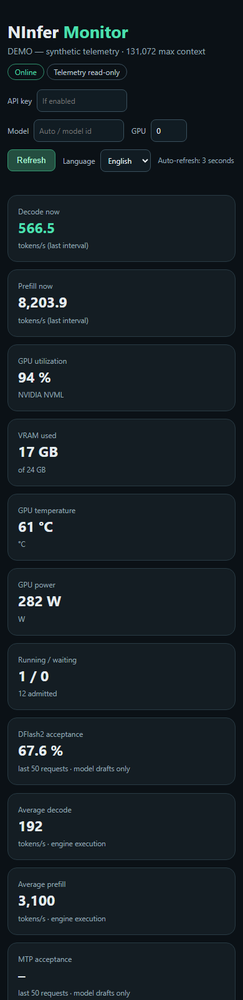

Live-Token-Durchsatz
Decode- und neu berechneter Prefill-Durchsatz aus den Server-Tokenzählern, alle drei Sekunden erfasst. Getrennte Kurven zeigen Lastwechsel.
Lokale KI-Inferenz und GPU-Aktivität direkt im Browser überwachen. Das schreibgeschützte Webpanel ist in ninfer-serve integriert, auch im portablen Windows-Release. Kein zusätzlicher Python-Prozess, keine externen Assets und kein Cloud-Dienst erforderlich.

Decode- und neu berechneter Prefill-Durchsatz aus den Server-Tokenzählern, alle drei Sekunden erfasst. Getrennte Kurven zeigen Lastwechsel.
Auslastung, VRAM, Temperatur und Leistungsaufnahme über optionales NVML. GPU-Index 0 bis 7 auswählbar. Nicht verfügbare Sensorwerte erscheinen als Strich.
Aggregierte angenommene/vorgeschlagene Modelltoken aus DFlash2-Ereignissen der letzten 50 Anfragen. N-Gram-Vorschläge werden nicht eingerechnet.
Device-KV-Belegung, konfigurierte Kontextgrenze, aktive/wartende und zugelassene Anfragen. KV-Belegung ist nicht die gesamte Chat-Kontextlänge.
Bis zu 50 abgeschlossene, abgelehnte oder fehlgeschlagene Anfragen: Zeit, Status, Tokenzahlen, Cache-Treffer, Decode-Rate und Dauer. Keine Prompts oder Antworttexte im Feed.
Abgeschlossene und fehlgeschlagene Anfragen, wiederverwendete Prompt-Token, Laufzeit und aggregierte Messpunkte. Bis zu 120 Samples im Tab; Polling pausiert bei ausgeblendetem Tab.
Starte ninfer-serve mit einem kompatiblen nativen Modell. Öffne auf dem Rechner, auf dem der Server läuft, diese Adresse im Browser:
http://127.0.0.1:8080/monitorErsetze 8080 durch deinen konfigurierten Port. Beispiel für --port 8099:
http://127.0.0.1:8099/monitorFalls API-Key-Authentifizierung aktiv ist, gib den Schlüssel im Passwortfeld des Webpanels ein. Im Router-Modus wählst du ein Modell über seine exakte Modell-ID. Wähle den passenden NVML-GPU-Index. Das Panel fragt seinen eigenen Server ab; diese öffentliche Projektwebsite verbindet sich niemals mit deinem lokalen Server.
Die Oberfläche passt sich schmalen Bildschirmen an und ordnet Messkarten und Diagramme untereinander an. Öffne das Panel in einem Browser, der den NInfer-Server erreichen kann. Aus Sicherheitsgründen wird eine Bindung an localhost empfohlen.
Das Monitor-HTML enthält keine eingebetteten Serverdaten. API-Schlüssel bleiben im Tab-Speicher, nicht im localStorage, in Cookies oder URL-Parametern. Statistik-, Metrik-, GPU- und Anfrage-Endpunkte behalten die API-Authentifizierung des Servers. Remotezugriff nur bewusst und abgesichert freigeben.
Der Durchsatz basiert auf serverweiten Zählerdifferenzen des letzten Polling-Intervalls, nicht auf Einzellanfrage-Latenz oder standardisierten Benchmarks. Beim ersten Sample fehlen die Raten. Optionale Sensoren können fehlen; Anfragehistorie wird beim Serverneustart zurückgesetzt.

| Endpoint | Funktion |
|---|---|
GET /monitor | Integriertes HTML-Webpanel |
GET /stats | Serverstatistiken als JSON |
GET /metrics | Prometheus-kompatible Metriken |
GET /monitor/gpu?index=0 | Optionale NVML-Sensorwerte |
GET /monitor/requests | Begrenzte Anfrage-Metadaten |
Für längere Historie, CPU-/RAM-Sensoren und vollständige JSONL-Anfragelogs gibt es den optionalen Python-Monitor. Das integrierte Webpanel benötigt ihn nicht.
Entdecke das erweiterte Webpanel mit Durchschnittsraten, TTFT und Latenzperzentilen, MTP-Akzeptanz, CPU/RAM, Taktraten, JSON/CSV, optionaler numerischer Historie, Deutsch/Englisch und Test-Chat. Die Demo ist simuliert. Der native Monitor in v0.1.8 enthält Anfrage-Perzentile, optionalen lokalen Verlauf/Export und expliziten Test-Chat; Demo-Zahlen sind keine Messwerte.
Demo öffnenP50/P95/P99 für Prefill- und Decode-Raten abgeschlossener Anfragen, inklusive Stichprobenzahl und Modellfilter. Prefill berücksichtigt Cache-Treffer. Numerischer Verlauf bleibt optional; keine Prompts oder Antworten im Verlauf. Die vorhandenen Screenshots zeigen synthetische Demodaten, nicht den neuen Versionsstand.
Technische Dokumentation